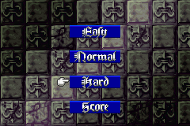
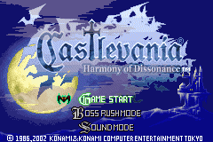
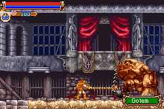
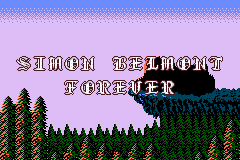
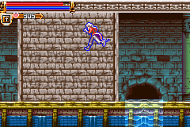
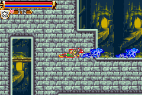
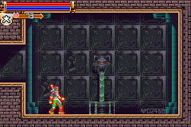
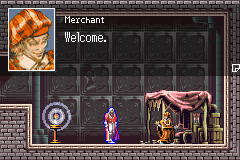

|
Trick
- Boss Rush Other Character
- Name Code
- Sound Test
- Why I can't Open The Last Door
- Why I can't Get 200%
- Good Experience
- Shop
Boss Rush Other Character
จะเข้าเล่น Boss Rush ได้เมื่อเล่นเกมจบไปแล้ว 1 ครั้ง
ในโหมดนี้ สามารถเลือกเล่นตัวละครได้ 3 คนด้วยกัน
คือ Juste, Maxim, Simon
ซึ่ง Juste นั้นสามารถเลือกเล่นได้อยู่แล้ว
ส่วนตัวละครอื่นนั้นต้องใช้เทคนิคในการนำมาเล่น ดังนี้
Maxim

ในช่วงเลือกระดับความยาก ให้กด "L" + "R" ค้างเอาไว้
แล้วจึงกดเลือกระดับความยาก
ก็จะสามารถใช้ Maxim มาเล่นได้
ซึ่ง Maxim มีความสามารถต่างๆ เหมือนกับในการเล่นเนื้อเรื่องปรกติของ Maxim
Simon Belmont
ในช่วงเปิดเครื่องหรือกด Reset จะขึ้น Logo ของ KONAMI
ให้กดคำสั่งยอดฮิต "บน" "บน" "ล่าง" "ล่าง"
"ซ้าย" "ขวา" "ซ้าย" "ขวา" "B"
"A" "Start"

จะพบว่า หน้าจอ Title มีสีเปลี่ยนจากสีแดงเป็นสีน้ำเงิน
จากนั้นเข้าสู่โหมด Boss Rush และเลือกระดับความยากตามปรกติ
จะสามารถเล่น Simon Belmont ได้

แต่ Simon นั้นจะเป็นตัวละครฉบับดั้งเดิม (Original)
นั่นหมายความว่า เขาจะมีความสามารถแบบเดิมๆ ทั้งหมด
คือ ไม่สามารถกระโดดสองชั้นได้, สไลด์ไม่ได้, เมื่อกระโดดแล้วไม่สามารถบังคับทิศทางได้
มีแส้เป็นอาวุธเพียงอย่างเดียว ส่วนอาวุธเสริมนั้น ก็ใช้ได้เฉพาะที่มีในภาคดั้งเดิม
คือ ขวดน้ำมนต์, มีด, ขวาน, ไม้กางเขน ส่วน หมัด, หนังสือ จะไม่สามารถใช้ได้
และขวดน้ำมนต์นั้น จะเป็นแบบดั้งเดิมด้วย คือ ขว้างไปแล้วจะแตกอยู่กับที่
ซึ่ง Simon จะมีค่าพลังต่างๆ ดังนี้
Level: 79
Max HP: 566
Max MP: 294
Max Hearts: 249
STR: 276
DEF: 196
INT: 227
LCK: 113
ซึ่งหากเล่นจบระดับยากได้ จะพบฉากจบพิเศษของ Simon

Name Code
เมื่อเล่นเกมจบ 1 รอบแล้ว เล่น Boss Rush จนเบื่อแล้ว
เริ่มเล่นเกมใหม่ แล้วให้ใส่ชื่อ ดังนี้
MAXIM - จะสามารถเล่นเป็น Maxim ได้
HARDGAME - เล่นเกมแบบยาก พลังโจมตีลดลงเหลือ 75%
NO MAGIC - เล่นเกมโดยไม่สามารถใช้เวทย์มนต์ได้
(* หมายเหตุ : ระหว่างคำว่า NO กับ MAGIC จะมีช่องว่างอยู่
วิธีกดให้มีช่องว่าง ให้ใช้ปุ่ม "R" )
Sound Test
ปรกติ หากเล่นจบจะมีโหมด Boss Rush เพิ่มขึ้นมา
แต่ถ้าหากเล่นจบโดยการปราบ Dracula จะมีโหมด Sound Test เพิ่มขึ้นมาอีกด้วย
Why I can't Open The Last Door
ประตูที่จะเข้าไปสู้กับ Maxim (หรือ Dracula) จะเปิดโดยมีเงื่อนไข ดังนี้
- หากเล่น Juste และต้องการเปิดประตูใน Castle B
ต้องเก็บ Relic ชิ้นส่วนของ Dracula ให้ครบ 6 ชิ้นเสียก่อน
- หากเล่น Maxim และต้องการเปิดประตูใน Castle B
ต้องปราบ Boss ตัวอื่นๆ ให้หมดเสียก่อน
- หากเล่น Maxim และต้องการเปิดประตูใน Castle A
ไม่สามารถเปิดได้ (หากใครทราบวิธีอย่าลืมส่ง E-mail มาบอกด้วยล่ะ ^^ )
Why I can't Get 200%
จะมีสถานที่อยู่ 2 แห่ง ซึ่งเห็นเป็นกำแพงและดูเหมือนจะตัน แต่สามารถไปต่อได้

(กระโดด 2 ชั้น เดินผ่านไปได้)
สถานที่ในภาพอยู่ในพื้นที่ Waterway of Aquatic
(ดู แผนที่
ประกอบ)
(* หมายเหตุ แผนที่อ้างอิงไปที่เว็บของ Gamefaqs.com)

(สไลด์ผ่านเข้าไปได้)
สถานที่ในภาพอยู่ในพื้นที่ Clockwork Tower A ในห้อง Race the Marble
(ดู แผนที่
ประกอบ)
(* หมายเหตุ แผนที่อ้างอิงไปที่เว็บของ Gamefaqs.com)
มีสถานที่แห่งหนึ่งใน Castle's Treasury B ซึ่งมีก้อนหินขวางอยู่
และไม่สามารถทำลายก้อนหินนั้นได้
แต่ด้านบนจะมีศัตรูชื่อ Gate Guarder ยืนเฝ้าอยู่
ให้โจมตีมันให้ตกลงไปทางด้านขวา มันจะกลิ้งไปชนก้อนหินนั่นแตก
หากคุณมี Level มากเกินไป ทำให้ฆ่ามันตายก่อนที่จะทำให้มันตกได้
ให้เปลี่ยนแส้ เป็น Circle of Energy แล้วใช้การแกว่งแส้โจมตีแทน (กด "โจมตี"
ค้างไว้)
(ดู แผนที่
ประกอบ)
(* หมายเหตุ แผนที่อ้างอิงไปที่เว็บของ Gamefaqs.com)
Good Experience
ศัตรูในภาคนี้แม้จะให้ EXP ที่แน่นอน
แต่ EXP ที่จะได้รับ จะไม่เท่ากันตลอดไป
ทั้งนี้จะขึ้นอยู่กับ Level ของเรา และ Level ของศัตรู
หาก Level ของ Juste มีมากกว่าศัตรู EXP ที่ได้รับก็จะลดน้อยลงไป
ถ้ามี Level มากกว่าศัตรู 1 Level จะได้ประสบการณ์ 90%
ถ้ามี Level มากกว่าศัตรู 2 Level จะได้ประสบการณ์ 80%
ถ้ามี Level มากกว่าศัตรู 3 Level จะได้ประสบการณ์ 70%
ถ้ามี Level มากกว่าศัตรู 5 Level จะได้ประสบการณ์ 50%
ถ้ามี Level มากกว่าศัตรู 9 Level จะได้ประสบการณ์ 10%
และหาก Level ของ Juste มีมากกว่าศัตรูถึง 10 Level จะได้รับ EXP เพียงตัวละ
1 เท่านั้น
ดังนั้นหากมี Level เกิน 40 ไปแล้ว
การจะเก็บ EXP เพิ่มนั้น มีศัตรูเพียงไม่กี่ตัวเท่านั้นที่จะให้ EXP ในปริมาณที่สูง
Simon Wraith เป็นศัตรูตัวหนึ่งที่ให้ประสบการณ์สูง
แถมยังสามารถจัดการได้ง่ายอีกด้วย และให้ Item ที่ดีอีกต่างหาก (คือ High
Potion)
Simon Wraith

No. 095
LV: 41
HP: 360
EXP: 488
พ่ายแพ้ต่อ : Fire
Drop: High Potion
Drop: Noon Star
และหากมี Level ถึง 51 แล้ว
Simon Wraith จะให้ EXP เพียง 1 เท่านั้น
ต้องเปลี่ยนไปสู้กับศัตรูตัวอื่น
ซึ่งมีเพียงตัวเดียวเท่านั้นที่ให้ EXP แต่มี HP สูงมาก คือ
Pike Master

No. 096
LV: 43
HP: 1,800
EXP: 537
Drop: Golden Crown
Drop: Levitation Boots
Shop
ภายในปราสาท Dracula อันน่ากลัว กลับมีพ่อค้ามาตั้งร้านขายของ
แต่การจะหาเขาให้เจอนั้น ไม่ง่ายนัก เพราะเขามีเงื่อนไขในการปรากฏตัว
หากดูตาม แผนที่
ประกอบ จะแสดงตำแหน่งของ Shop ทั้งหมด
(* หมายเหตุ แผนที่อ้างอิงไปที่เว็บของ Gamefaqs.com)
เมื่อเข้าไปจะเจอแต่ห้องว่างๆ แต่ให้สังเกตบริเวณมุมขวาล่าง จะมีคำใบ้ซ่อนอยู่

คำใบ้ต่างๆ และเงื่อนไข มีดังนี้
L13579 - คือ Juste ต้องมี Level เป็นเลขคี่ คือลงท้ายด้วย 1, 3, 5 ,7, 9
รูปหัวใจ02468 - คือ Juste ต้องมี Heart เป็นเลขคู่ คือลงท้ายด้วย 0, 2,
4, 6, 8
รูปการ์ด - คือ Juste ต้องมี Item Noon Star
ในช่องเก็บ Item
???? - คือ Juste ต้องมี Level 50 หรือมากกว่านั้น และต้องใช้ Griffin's
Wing อยู่ด้วย
เมื่อทำตามเงื่อนไขได้แล้ว จะเจอพ่อค้า

แต่ร้านค้าแต่ละแห่ง จะขายสินค้าไม่เหมือนกัน ซึ่งมีรายการดังนี้
Castle's Treasury B
เงื่อนไข - ไม่มี
สินค้า
Potion - 80G
Antidote - 20G
Uncurse - 20G
Rubber Plate - 250G
Plate Coat - 800G
Casual Clothes - 98G
Cloth Helmet - 160G
Leather Greaves - 140G
Castle Map 2 - 105G
Castle Tower B
เงื่อนไข - จำนวนหัวใจต้องมีเป็นเลขคู่
สินค้า
Potion - 80G
Antidote - 20G
Uncurse - 20G
Rubber Plate - 250G
Plate Coat - 800G
Casual Clothes - 98G
Cloth Helmet - 160G
T Shirt - 199G
Sallet - 340G
Cuirass Armor - 1,200G
Rameeru(?) Coat - 1,005G
Corinthian Helmet - 750G
Pilos - 1,050G
Bangle - 550G
Nova Ring - 5,000G
Moss-Grown Cave B
เงื่อนไข - Level ต้องเป็นเลขคี่
สินค้า
Potion - 80G
Antidote - 20G
Uncurse - 20G
Rubber Plate - 250G
Plate Coat - 800G
Casual Clothes - 98G
Cloth Helmet - 160G
Leather Greaves - 140G
T Shirt - 199G
Sallet - 340G
Clockwork Tower B
เงื่อนไข - ต้องมี Noon Star
สินค้า
Potion - 80G
High Potion - 200G
Antidote - 20G
Uncurse - 20G
Plate Coat - 800G
T Shirt - 199G
Sallet - 340G
Cuirass Armor - 1,200G
Lamellar Coat - 1,005G
Corinthian Helmet - 750G
Pilos - 550G
Bangle - 550G
Armet - 1,800G
Velvet Mantle - 1,350G
Mana Prism - 250G
Castle Tower A
เงื่อนไข - จำนวนหัวใจต้องมีเป็นเลขคู่
สินค้า
Potion - 80G
High Potion - 200G
Antidote - 20G
Uncurse - 20G
Lamellar Coat - 1,005G
Pilos - 1,050G
Bangle - 550G
Armet - 1,800G
Velvet Mantle - 1,350G
Heavy Armor - 2,000G
Barrel Helm - 2,300G
Morion - 3,000G
Blood Gloves - 2,100G
Greaves - 1,700G
Aurora Ring - 5,000G
Moss-Grown Cave A
เงื่อนไข - Level ต้องเป็นเลขคี่
สินค้า
Potion - 80G
High Potion - 200G
Antidote - 20G
Uncurse - 20G
Velvet Mantle - 1,350G
Heavy Armor - 2,000G
Barrel Helm - 2,300G
Morion - 3,000G
Bloody Gloves - 2,100G
Greaves - 1,700G
Cabaset - 3,800G
Silver Boots - 2,800G
Battle Armor - 6,000G
Lobster Tail Pot - 4,400G
Ceramic Mail - 15,000G
Entrance
เงื่อนไข - ต้องมี Level 50 หรือมากกว่า และต้องสวมใส่ Griffin Wing ด้วย
สินค้า
Potion - 80G
High Potion - 200G
X-Potion - 800G
Mana Prism - 250G
High Mana Prism - 1,000G
Antidote - 20G
Uncurse - 20G
Invincibility Potion - 10,000G
Platinum Crown - 9,999G
Scarlet Silk Hat - 9,800
Platinum Shoes - 5,000G
Infinite Shoes - 12,000G
Castle's Treasury A
เงื่อนไข - ไม่มี
สินค้า
Potion - 80G
High Potion - 200G
Antidote - 20G
Uncurse - 20G
Velvet Mantle - 1,350G
Heavy Armor - 2,000G
Barrel Helm - 2,300G
Morion - 3,000G
Bloody Gloves - 2,100G
Greaves - 1,700G
Cabaset - 3,800G
Silver Boots - 2,800G
Musical Necklace - 5,000G
|